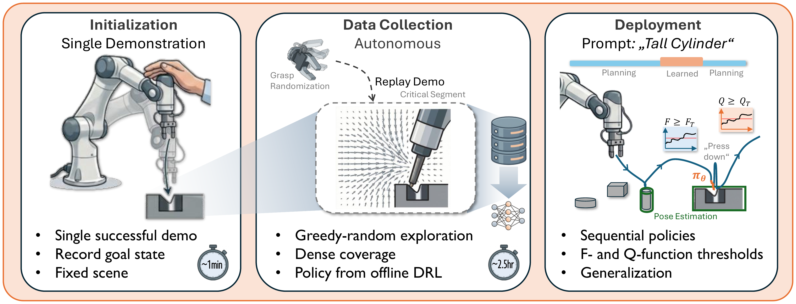

We use expensive robot data only for the most challenging section of the task, and rely on non-robot data wherever possible. The result is a policy that is robust and generalizable, yet very precise. This leads to reduced data-collection effort and automated data collection.
All videos are sped up.Using natural-language prompts, the robot solves a long-horizon sequence of challenging tasks in a cluttered scene — using motion planning for free-space motion and a learned policy only at the critical contact segments. We never collected data for this exact setup!
Abstract
Learned policies trained end-to-end on large datasets often remain brittle in high-precision tasks and struggle with generalization. We find that these limitations largely stem from a lack of structure and focus in data collection. Our key insight is to leverage dense data collection only for the critical, contact-rich segment of a task and to rely on traditional planning during simple free-space motion.
We propose an automated data-collection scheme combined with offline deep reinforcement learning for the critical segment — eliminating reliance on a teleoperator's skill and on online policy updates. Across four challenging real-world tasks, using only 2–2.5 h of autonomous data collection, we achieve an average success rate of 96%, compared to the strongest baseline at 55%. Notably, performance remains high in out-of-distribution scenarios where end-to-end approaches struggle.
Robustness & Generalization
Because robot data is used only where truly needed, the policy generalizes to human interventions, scene-level distractors, clutter, and new backgrounds — settings where end-to-end approaches break down.
Method
The task is split into easy free-space motion (solved with off-the-shelf pose estimation and motion planning) and the hard, contact-rich critical segment (solved with a learned policy from offline deep RL).

Rollouts · Our Method
Uncut rollouts of our method on each task. Success rates are measured over 50 trials per task.
Autonomous Data Collection
Only collecting data at the critical segment enables (almost) autonomous data collection. Bootstrapping from a single demonstration, the robot densely collects data at the critical segment via greedy-random exploration. Operator intervention is only required for resetting the scene.